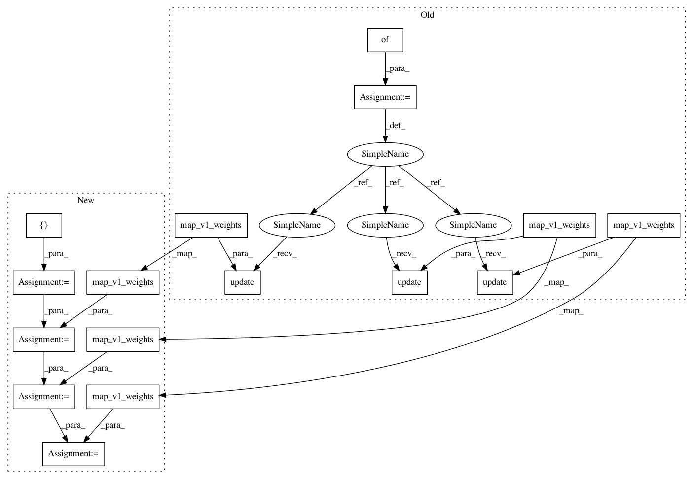

ba28f13e3c6bbeb8521feef63af72557ac08781b,opennmt/layers/transformer.py,MultiHeadAttention,map_v1_weights,#MultiHeadAttention#Any#,145
Before Change
lambda w: np.split(w, num_splits, axis=0 if w.ndim == 1 else 1)[index],
weights[key])
m = {}
if "conv1d_2" not in weights: // Case self-attention.
m.update(self.linear_queries.map_v1_weights(_partial_weights("conv1d", 3, 0)))
m.update(self.linear_keys.map_v1_weights(_partial_weights("conv1d", 3, 1)))
m.update(self.linear_values.map_v1_weights(_partial_weights("conv1d", 3, 2)))
m.update(self.linear_output.map_v1_weights(weights["conv1d_1"]))
else:
m.update(self.linear_queries.map_v1_weights(weights["conv1d"]))
m.update(self.linear_keys.map_v1_weights(_partial_weights("conv1d_1", 2, 0)))
m.update(self.linear_values.map_v1_weights(_partial_weights("conv1d_1", 2, 1)))
m.update(self.linear_output.map_v1_weights(weights["conv1d_2"]))
return m
def call(self, inputs, memory=None, mask=None, cache=None, training=None): // pylint: disable=arguments-differ
Runs the layer.
After Change
lambda w: np.split(w, num_splits, axis=0 if w.ndim == 1 else 1)[index],
weights[key])
m = []
if "conv1d_2" not in weights: // Case self-attention.
m += self.linear_queries.map_v1_weights(_partial_weights("conv1d", 3, 0))
m += self.linear_keys.map_v1_weights(_partial_weights("conv1d", 3, 1))
m += self.linear_values.map_v1_weights(_partial_weights("conv1d", 3, 2))
m += self.linear_output.map_v1_weights(weights["conv1d_1"])
else:
m += self.linear_queries.map_v1_weights(weights["conv1d"])
m += self.linear_keys.map_v1_weights(_partial_weights("conv1d_1", 2, 0))
m += self.linear_values.map_v1_weights(_partial_weights("conv1d_1", 2, 1))
m += self.linear_output.map_v1_weights(weights["conv1d_2"])
return m
def call(self, inputs, memory=None, mask=None, cache=None, training=None): // pylint: disable=arguments-differ
Runs the layer.
In pattern: SUPERPATTERN
Frequency: 4
Non-data size: 16
Instances
Project Name: OpenNMT/OpenNMT-tf
Commit Name: ba28f13e3c6bbeb8521feef63af72557ac08781b
Time: 2019-08-26
Author: guillaume.klein@systrangroup.com
File Name: opennmt/layers/transformer.py
Class Name: MultiHeadAttention
Method Name: map_v1_weights
Project Name: OpenNMT/OpenNMT-tf
Commit Name: ba28f13e3c6bbeb8521feef63af72557ac08781b
Time: 2019-08-26
Author: guillaume.klein@systrangroup.com
File Name: opennmt/models/transformer.py
Class Name: Transformer
Method Name: map_v1_weights
Project Name: OpenNMT/OpenNMT-tf
Commit Name: ba28f13e3c6bbeb8521feef63af72557ac08781b
Time: 2019-08-26
Author: guillaume.klein@systrangroup.com
File Name: opennmt/decoders/self_attention_decoder.py
Class Name: _SelfAttentionDecoderLayer
Method Name: map_v1_weights
Project Name: OpenNMT/OpenNMT-tf
Commit Name: ba28f13e3c6bbeb8521feef63af72557ac08781b
Time: 2019-08-26
Author: guillaume.klein@systrangroup.com
File Name: opennmt/layers/transformer.py
Class Name: MultiHeadAttention
Method Name: map_v1_weights
Project Name: OpenNMT/OpenNMT-tf
Commit Name: ba28f13e3c6bbeb8521feef63af72557ac08781b
Time: 2019-08-26
Author: guillaume.klein@systrangroup.com
File Name: opennmt/decoders/self_attention_decoder.py
Class Name: SelfAttentionDecoder
Method Name: map_v1_weights